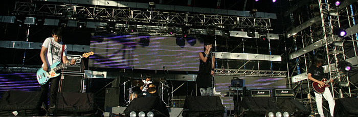

UPDATE
[10/2017] Presented my work on crowdsourcing music segmentation annotations during summer 2016 Adobe Research internship at ISMIR 2017.
[09/2017] Finished summer intership at Smule in the audio/video team working on analyzing singing styles with deep learning techniques.
ABOUT
I am Cheng-i Wang, currently a Ph.D candidate in UCSD computer music started 2013 fall, and am gonna graduate in April 2018.
My research interest is analyzing/generating music with content-based music information retrieval techniques.
Current research topic is phrase/gesture recognition and structural music segmentation by supervised learning.
Apart from academic activities, I am a composer, sound/projection/live image processing designer for theatrical performances.